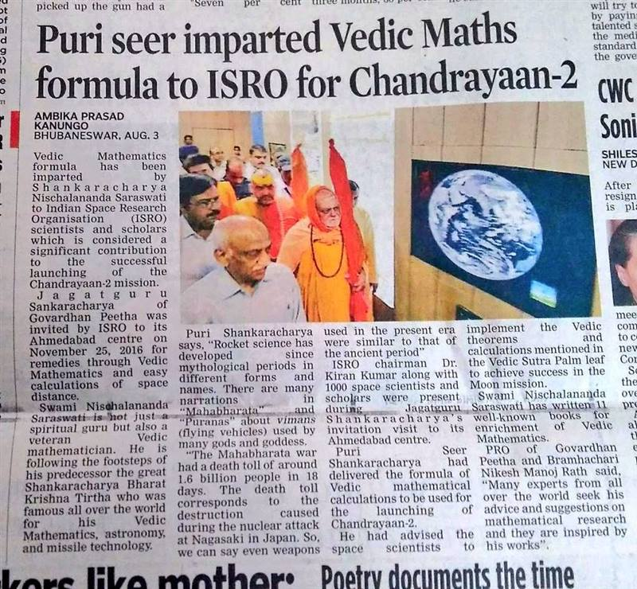

Ancient mathematical wisdom for modern scientific breakthroughs
Jagadguru Shankaracharya Swami Nischalananda Saraswati was invited by ISRO to its Ahmedabad centre on November 25, 2016, for remedies through Vedic Mathematics and easy calculations of space distance.
He delivered the formula of Vedic mathematical calculations to be used for the launching of Chandrayaan-2 and advised the space scientists to implement the Vedic theorems and calculations mentioned in the Vedic Sutra Palm Leaf to achieve success in the Moon mission.
ISRO Chairman Dr. Kiran Kumar along with 1,000 space scientists and scholars were present during Jagadguru Shankaracharya's invitation visit.
"Rocket science has developed since mythological periods in different forms and names. There are many narrations in Mahabharata and Puranas about vimanas (flying vehicles) used by many gods and goddess."
— Shankaracharya Swami Nischalananda Saraswati, at ISRO

The Shankaracharya who brought Vedic Mathematics to the modern world
Born as Venkataraman Saraswati in March 1884 in Tirunelveli, Tamil Nadu, Bharati Krishna Teerthaji was the 143rd Shankaracharya of Govardhan Math (1925–1959). He was an extraordinary scholar who mastered multiple subjects including Mathematics, Science, History, Philosophy, English, Sanskrit, Marathi, and Kannada.
After years of intensive study of ancient texts at Sringeri Math, he discovered 16 Sutras (formulae) and 13 Sub-Sutras hidden in the Parishishta (appendix) of the Atharvaveda. These Sutras could solve complex mathematical problems — from arithmetic to calculus — with astonishing speed and elegance.
His monumental work "Vedic Mathematics", published posthumously in 1965, revolutionized the way the world looked at Indian mathematical traditions. The book demonstrated that ancient Indian sages had developed highly sophisticated mathematical systems far ahead of their time.
"By the time he published his book, he had become blind. Yet his mental calculations remained flawless — a testament to the power of the Vedic system."
Ekadhikena Purvena
Nikhilam Sutra
Urdhva Tiryagbhyam
Paravartya Yojayet
Shunyam Samyasamuccaye
Anurupye Shunyamanyat
Sankalana Vyavakalanabhyam
Puranapuranabhyam
Chalana Kalanabhyam
Yavadunam
Vyashtisamanshtih
Shesanyankena Charamena
Sopaantyadvayamantyam
Ekanyunena Purvena
Gunitasamuchyah
Gunakasamuchyah
Swami Nischalananda Saraswati, the current 145th Shankaracharya, has written 11 well-known books for the enrichment of Vedic Mathematics, continuing the legacy. His works and contributions helped advise scientists at ISRO, IITs, DRDO, and BARC.